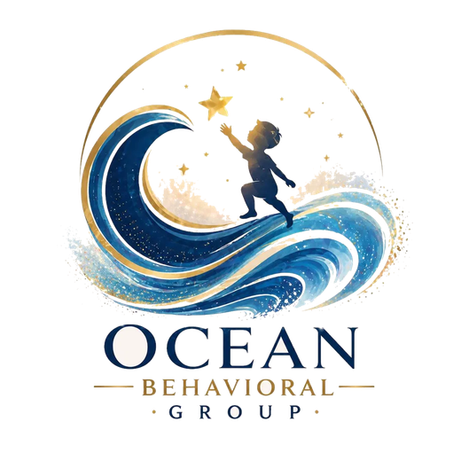

Miramar, Florida · English & SpanishMiramar, Florida · Inglés y español
Behavior analysis for families, and for the people who practice it. Análisis de conducta para las familias y para quienes lo ejercen.
Ocean Behavioral Group provides BCBA-led ABA therapy at home and in the community, and supports RBTs and future behavior analysts with competency assessments, renewals and supervised fieldwork. Ocean Behavioral Group ofrece terapia ABA dirigida por un BCBA en el hogar y en la comunidad, y apoya a los RBT y futuros analistas de conducta con evaluaciones de competencia, renovaciones y supervisión de horas de práctica.

For familiesPara las familias
ABA therapyTerapia ABA
Individualized programs for children and adolescents, built from a BCBA assessment and delivered where daily life happens.Programas individualizados para niños y adolescentes, diseñados a partir de una evaluación del BCBA y realizados donde transcurre la vida diaria.
- Behavior assessment and treatment planningEvaluación de conducta y plan de tratamiento
- In-home and community sessionsSesiones en el hogar y en la comunidad
- Caregiver training at every stageEntrenamiento a cuidadores en cada etapa
For professionalsPara profesionales
RBTs and future analystsRBT y futuros analistas
The steps between your training and your credential, handled by a practicing BCBA.Los pasos entre tu entrenamiento y tu credencial, a cargo de un BCBA en ejercicio.
- RBT initial competency assessmentEvaluación inicial de competencia RBT
- RBT credential renewalRenovación de la credencial RBT
- Fieldwork supervision for BCBA and BCaBA candidatesSupervisión de horas de práctica para candidatos a BCBA y BCaBA
Everything we offerTodo lo que ofrecemos
Services and pricesServicios y precios
BCBA-ledDirigido por un BCBA
A Board Certified Behavior Analyst designs each program and conducts each assessment.Un Analista de Conducta Certificado diseña cada programa y realiza cada evaluación.
Fully bilingualTotalmente bilingüe
Every service, form and conversation is available in English and Spanish.Cada servicio, formulario y conversación está disponible en inglés y español.
Two countiesDos condados
Based in Miramar and serving families and professionals across Broward and Miami-Dade.Con base en Miramar, atendemos a familias y profesionales en Broward y Miami-Dade.
ABA therapy at home and in the communityTerapia ABA en el hogar y en la comunidad
Applied behavior analysis for children and adolescents in Broward and Miami-Dade. Each program starts with an assessment by our BCBA and includes training for the caregivers who are with the child every day.Análisis de conducta aplicado para niños y adolescentes en Broward y Miami-Dade. Cada programa comienza con una evaluación de nuestro BCBA e incluye entrenamiento para los cuidadores que acompañan al niño cada día.
What we provideLo que ofrecemos
- Behavior assessmentEvaluación de conductaWe observe, interview and measure to understand your child's skills and the reasons behind challenging behavior.Observamos, entrevistamos y medimos para entender las habilidades de tu hijo y las razones de la conducta difícil.
- Individualized treatment planPlan de tratamiento individualizadoGoals for communication, daily living and social skills, chosen with your family's priorities.Metas de comunicación, vida diaria y habilidades sociales, elegidas según las prioridades de tu familia.
- One-to-one sessionsSesiones uno a unoA Registered Behavior Technician works with your child at home or in the community, supervised by the BCBA.Un Técnico de Conducta Registrado trabaja con tu hijo en casa o en la comunidad, bajo la supervisión del BCBA.
- Caregiver trainingEntrenamiento a cuidadoresYou learn the same strategies we use, so skills carry over into daily routines.Aprendes las mismas estrategias que usamos, para que las habilidades se mantengan en la rutina diaria.
- Service in your languageAtención en tu idiomaSessions, plans and meetings in English or Spanish.Sesiones, planes y reuniones en inglés o español.
How to startCómo empezar
- Request an intake callSolicita una llamada inicialTell us about your child and what you are looking for.Cuéntanos sobre tu hijo y lo que buscas.
- We review your documentsRevisamos tus documentosWe look at the diagnosis and referral you have and tell you what your health plan asks for.Revisamos el diagnóstico y el referido que tengas y te decimos qué pide tu plan de salud.
- Assessment with the BCBAEvaluación con el BCBAOur analyst meets your child and family and writes the treatment plan.Nuestro analista conoce a tu hijo y a tu familia y redacta el plan de tratamiento.
- Sessions beginComienzan las sesionesOnce the plan is approved, we set a schedule that fits your family.Una vez aprobado el plan, acordamos un horario que se ajuste a tu familia.
RBT competency assessments and renewalsEvaluaciones de competencia y renovaciones RBT
Finished your 40-hour training? These are the next steps to earn your RBT credential and keep it. Both services are available in English and Spanish.¿Terminaste tu entrenamiento de 40 horas? Estos son los siguientes pasos para obtener tu credencial RBT y conservarla. Ambos servicios están disponibles en inglés y español.
Before you applyAntes de aplicar
Initial Competency AssessmentEvaluación Inicial de Competencia
The BACB requires every RBT applicant to demonstrate the required tasks to a qualified assessor. Our BCBA conducts and signs yours.La BACB exige que cada aspirante a RBT demuestre las tareas requeridas ante un evaluador calificado. Nuestro BCBA realiza y firma la tuya.
- Tasks assessed with a client, by role-play or by interviewTareas evaluadas con un cliente, mediante juego de roles o entrevista
- A preparation guide so you know what to expectUna guía de preparación para que sepas qué esperar
- Scheduled around your application date, since the assessment must fall within 90 days of applyingProgramada según tu fecha de aplicación, ya que la evaluación debe realizarse dentro de los 90 días previos a aplicar
- Signed BACB assessment form when every task is demonstratedFormulario de la BACB firmado cuando todas las tareas estén demostradas
Already certifiedYa certificado
Credential RenewalRenovación de Credencial
We walk you through what your renewal cycle requires and complete the parts that need a BCBA.Te guiamos en lo que exige tu ciclo de renovación y completamos las partes que requieren un BCBA.
- Review of your current BACB renewal requirementsRevisión de tus requisitos actuales de renovación ante la BACB
- Any assessment or documentation your renewal calls forCualquier evaluación o documentación que tu renovación requiera
- Deadline tracking so your certification does not lapseSeguimiento de fechas para que tu certificación no caduque
Fieldwork supervision for BCBA and BCaBA candidatesSupervisión de horas de práctica para candidatos a BCBA y BCaBA
A flat monthly fee, a structured curriculum, and documentation kept ready for a BACB audit. Choose the fieldwork type that matches your plan.Una tarifa mensual fija, un currículo estructurado y documentación lista para una auditoría de la BACB. Elige el tipo de práctica que corresponda a tu plan.
BCBA · BCaBA
Supervised FieldworkPráctica Supervisada
The standard path. A steady pace that fits alongside a full caseload.La ruta estándar. Un ritmo constante que se combina con una carga completa de casos.
- The supervision percentage the BACB requires each monthEl porcentaje de supervisión que la BACB exige cada mes
- Individual meetings and client observation with feedbackReuniones individuales y observación con clientes, con retroalimentación
- Monthly and final verification forms signed on timeFormularios de verificación mensuales y final firmados a tiempo
BCBA · BCaBA
Concentrated FieldworkPráctica Concentrada
More supervision every month in exchange for fewer total fieldwork hours.Más supervisión cada mes a cambio de menos horas totales de práctica.
- The higher supervision percentage this path requiresEl porcentaje más alto de supervisión que exige esta ruta
- More frequent meetings and observation timeReuniones y tiempo de observación más frecuentes
- Monthly and final verification forms signed on timeFormularios de verificación mensuales y final firmados a tiempo
Included in bothIncluido en ambas
- A five-phase competency curriculumUn currículo de competencias en cinco fasesFrom professional conduct and measurement through assessment, intervention design and supervising others.Desde conducta profesional y medición hasta evaluación, diseño de intervenciones y supervisión de otros.
- An hours tracker that checks itselfUn registro de horas que se verifica soloEach month shows whether you met every BACB threshold, while there is still time to fix it.Cada mes muestra si cumpliste todos los requisitos de la BACB, cuando aún hay tiempo de corregir.
- Written feedback after observationsRetroalimentación escrita tras cada observaciónWhat went well, one target to improve, and practice before the next session.Qué salió bien, un objetivo por mejorar y práctica antes de la siguiente sesión.
- Supervision in English or SpanishSupervisión en inglés o españolMeetings and materials in the language you work in.Reuniones y materiales en el idioma en que trabajas.
How it worksCómo funciona
- Intro callLlamada inicialWe confirm your eligibility, your setting and which fieldwork type fits.Confirmamos tu elegibilidad, tu lugar de práctica y qué tipo de práctica te conviene.
- Signed supervision contractContrato de supervisión firmadoThe BACB counts hours only after the contract is signed, so this comes first.La BACB solo cuenta las horas después de firmar el contrato; por eso es lo primero.
- Monthly cycleCiclo mensualMeetings, observation, tracker review and your signed monthly form.Reuniones, observación, revisión del registro y tu formulario mensual firmado.
- Final verificationVerificación finalWhen your hours are complete, we sign the final form for your application.Al completar tus horas, firmamos el formulario final para tu aplicación.
More services for ABA professionalsMás servicios para profesionales de ABA
Small things that make the job search and the paperwork easier.Pequeños servicios que facilitan la búsqueda de empleo y los trámites.
CareerCarrera
ABA-Focused CVCurrículum enfocado en ABA
A résumé that presents your training, credential and experience the way ABA agencies read them. Available in English or Spanish.Un currículum que presenta tu entrenamiento, credencial y experiencia como las agencias de ABA los leen. Disponible en inglés o español.
Order my CVPedir mi currículumPaperworkTrámites
Document NotarizationNotarización de Documentos
Notary service for the forms and affidavits your employer or credentialing process asks for.Servicio notarial para los formularios y declaraciones que pide tu empleador o tu proceso de credenciales.
Book a notarizationReservar notarizaciónContactContacto
Tell us what you needCuéntanos qué necesitas
We answer in English or Spanish, usually within one business day.Respondemos en inglés o español, normalmente en un día hábil.